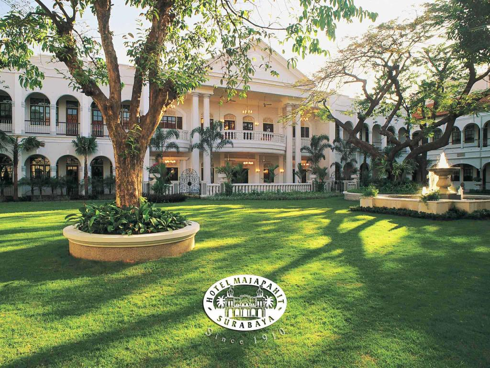
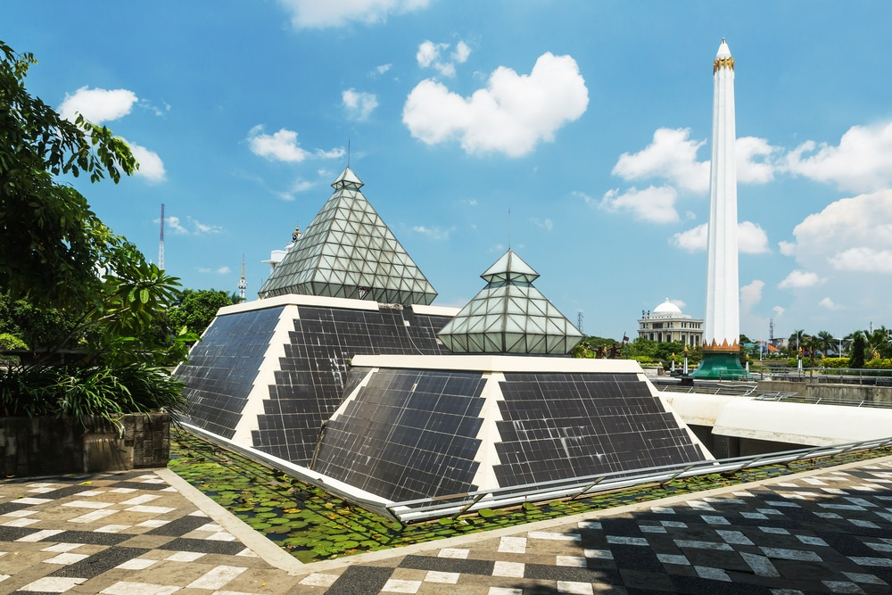
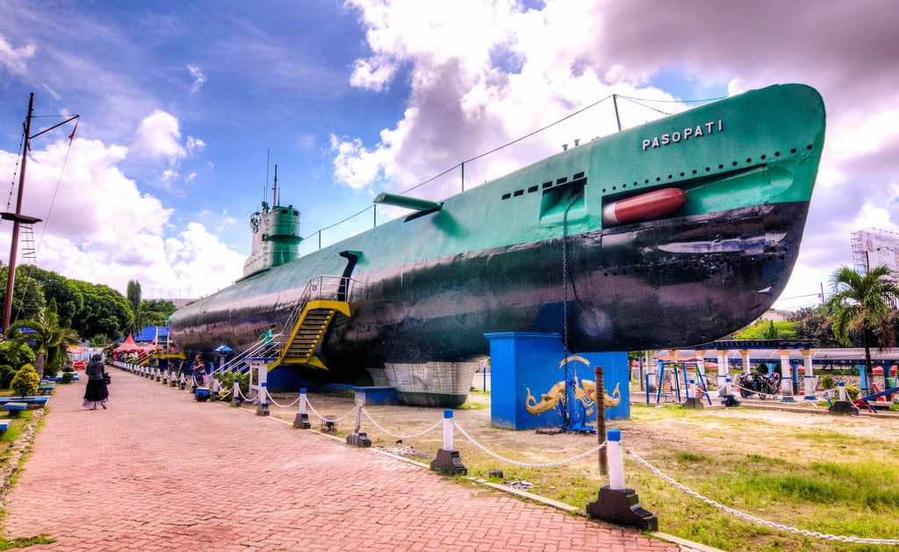
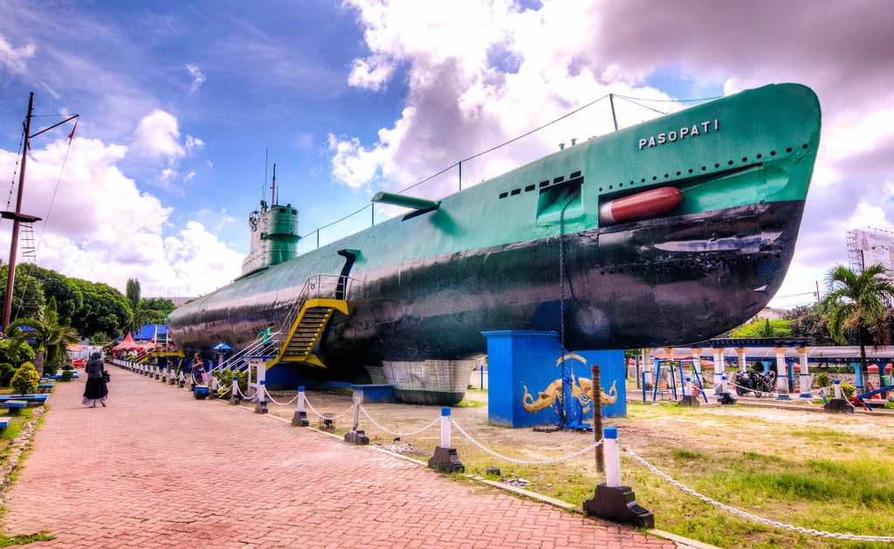

Best Places You Have To Visit In Surabaya
Top 4 Most Beautiful Places That I Visited
1. Majapahit Hotel
Back to the past. This is the most modern building in 1910 and The Sarkies Family as the founders called the grandest hotel of its time the "Oranje Hotel".
Graceful architecture featuring luxurious 5-star facilities as well as immaculate garden design, reflects the atmosphere of a hundred years old building with 143 luxurious suites and spacious rooms for ultimate relaxation. A luxury boutique hotel strategically located in the heart of Surabaya, perfect for family stays or special weekends.
Surabaya is located on the island of Java, Indonesia. A large, vibrant city that combines modern skyscrapers with canals and buildings from its Dutch colonial history.
Address: Tunjungan 65, Genteng, Surabaya.
Opening Hours: 24 Hours.
2. Tugu Pahlawan

One of the buildings that is the pride of the city of Surabaya is the Tugu Pahlawan. A monument that is a memorial to the struggle of the Indonesian nation can be an interesting tourist spot, especially for those of you who like history or to introduce history to your family. Here, you can see the Tugu Pahlawan, directly visit the 10 November Museum in this area.
The Tugu Pahlawan is in the form of an inverted nail, that is, the lower diameter of the monument is greater than the upper diameter. This monument has a height of 41.15 meters or 45 yards and a diameter of 3.1 meters, the more it goes up, the smaller the diameter.
Apart from the Tugu Pahlawan, in this area there are statues and other buildings depicting the struggle of the Indonesian people, especially to commemorate the battle in Surabaya on November 10, 1945.
Address: Pahlawan, Alun-Alun Contong, Surabaya.
Opening Hours: 7 am to 3 pm. Price (10 Nopember Museum) starts from Rp 5000.
3. Monumen Kapal Selam

You can see one of Indonesia's submarines in their entirety and complete with weapons at the Submarine Monument which is managed by the Indonesian Navy. This monument is located beside one of the main rivers in Surabaya, namely Kalimas, next to Plaza Surabaya.
The Submarine Monument in Surabaya was inaugurated on June 27, 1998. Because it is located in the city center of Surabaya as a city of heroes, the Submarine Monument can be a means of education that is both educational and entertaining for you and your children.
To bring a submarine to the middle of Surabaya is not easy. Initially the submarine was cut into 16 pieces. Then taken to the Submarine Monument area after it was assembled again.
Address: Pemuda 39, Embong Kaliasin, Surabaya.
Opening Hours: 8 am to 9 pm. Price starts from Rp 15000.
4. Klenteng Sanggar Agung

In Indonesia, the number of Buddhists cannot be said to be small. Therefore, there are many temples in Indonesia, one of which is the Sanggar Agung Temple in Surabaya.
A temple or temple is a sacred place of worship for Buddhists. In Indonesia itself, apart from functioning as a place of worship, it is also open to the public as a tourist attraction.
This temple is also unique which is so interesting to visit. Not only the ornaments typical of Chinese culture, but also a statue of Dewi Kwan In by the sea that is charming.
Address: Inside Kenjeran Park, Sukolilo 100, Surabaya.
Opening Hours: 24 Hours. Price starts from Rp 5000.
Opening Hours: 24 Hours.
The Tugu Pahlawan is in the form of an inverted nail, that is, the lower diameter of the monument is greater than the upper diameter. This monument has a height of 41.15 meters or 45 yards and a diameter of 3.1 meters, the more it goes up, the smaller the diameter.
Apart from the Tugu Pahlawan, in this area there are statues and other buildings depicting the struggle of the Indonesian people, especially to commemorate the battle in Surabaya on November 10, 1945.
Address: Pahlawan, Alun-Alun Contong, Surabaya.
Opening Hours: 7 am to 3 pm. Price (10 Nopember Museum) starts from Rp 5000.
3. Monumen Kapal Selam

You can see one of Indonesia's submarines in their entirety and complete with weapons at the Submarine Monument which is managed by the Indonesian Navy. This monument is located beside one of the main rivers in Surabaya, namely Kalimas, next to Plaza Surabaya.
The Submarine Monument in Surabaya was inaugurated on June 27, 1998. Because it is located in the city center of Surabaya as a city of heroes, the Submarine Monument can be a means of education that is both educational and entertaining for you and your children.
To bring a submarine to the middle of Surabaya is not easy. Initially the submarine was cut into 16 pieces. Then taken to the Submarine Monument area after it was assembled again.
Address: Pemuda 39, Embong Kaliasin, Surabaya.
Opening Hours: 8 am to 9 pm. Price starts from Rp 15000.
4. Klenteng Sanggar Agung